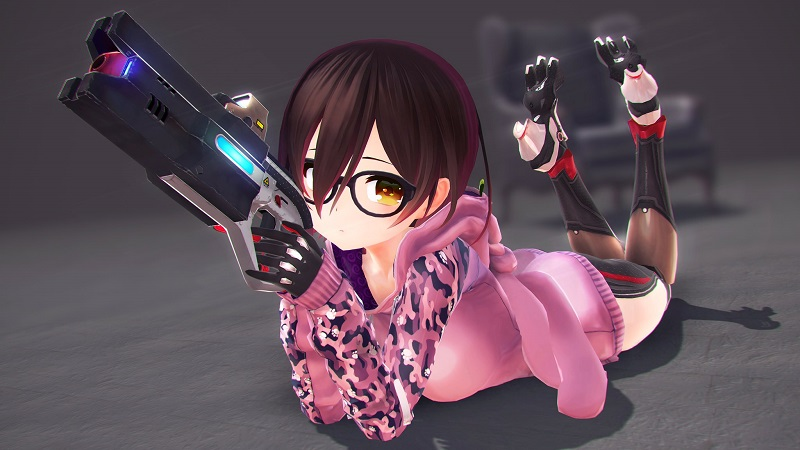
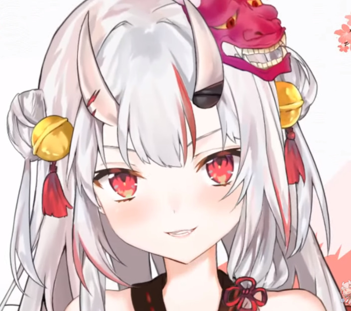
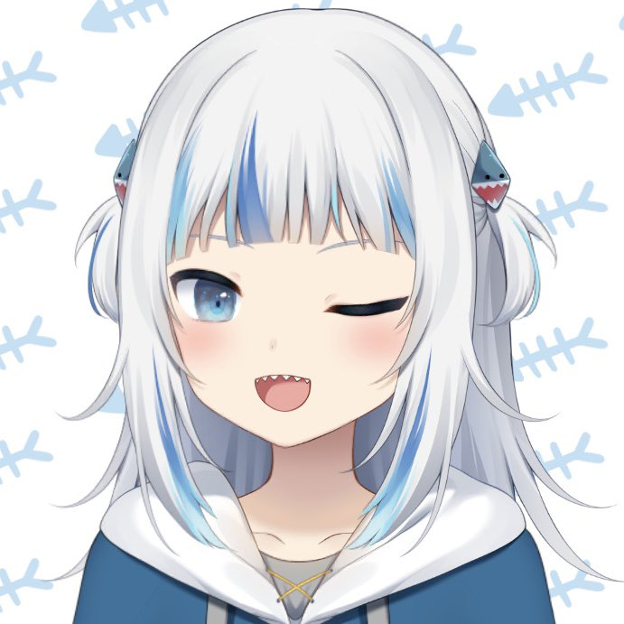

好きなもの紹介 VTuer
ロボ子さん

作成者
kuromaru9(@kuromaru9)
初配信
2018/3/9
主な配信
雑談、ゲーム、ASMR
ホロライブ０期生。癒し声が特徴なロボ子さん。ふんわりした声で可愛い。自分が最初に推し始めたVTuber。歌ってみたの「あっかんべーだ」で惹かれた。FPSゲームが好きでよくしている。低音の声を出せ、その声で歌うこともでき初めて聞くと普段の声とのギャップにびっくりする。
元々はkuromaru9さんが趣味で作っていて、それをホロライブに貸したため、３DモデルのVTuberにしては服の種類や髪型、ちょっとした小物が多くある。服は迷彩柄、パーカー、インナー、T-シャツ、水着、カーディガン、冬物、正月服。小物はヘッドホン、眼帯、マフラー、眼鏡、涙丸眼鏡、シュシュ、麦わら帽子。髪型は通常、ポニーテール、ショート、ロング以上沢山のものがある。しかも、どれもクオリティが高い。
癒しを求めている方にお勧めの方です。
百鬼あやめ

イラストレーター
ななかぐら(@nana_kaguraaa)
初配信
2018/9/3
主な配信
雑談、歌、ゲーム
ホロライブ２期生。声が可愛い。言動が可愛い。初期の頃は可愛いといわれると可愛い可愛い言わないでと言っていた。普段は明るくふわふわした感じで天然みたいなところがあり、コラボ放送でたまに人の話を聞いてなかったりすることがある。
フォールガイズでポンコツなプレイを見せることが多く、普段の行動も相まってポンコツなことを視聴者からもメンバーからもいじられる。しかし、人狼ゲームをすると恐ろしいほどの洞察力を見せつけてくる。
ダジャレが大好きで自分が言ったダジャレで自分が笑ったりする。よく笑う。可愛い。歌が上手い。
Gawr Gura

イラストレーター
甘城なつき(@amsrntk3)
初配信
2020/9/13
主な配信
雑談、歌、マイクラ、ホラゲー
ホロライブEN(イングリッシュ)。海外向けに英語を話す海外の人を採用したホロライブのグループの一人。主な言語は英語で、英語のため、大半は何いっているかわからないが、それでも可愛い。たまに日本語を話してくれる。歌枠では日本語で日本の歌を歌ってくれたりする。
登録者はデビューしてからかなりの勢いで増え、現在では登録者はホロライブ内１位の213万人。これはVTuber全体で見ても、かなり上位に入る人数である。
日本人の視聴者も割といて、可愛いに国境はないということがよくわかる。
作成者：e204210ot 大石宜昭